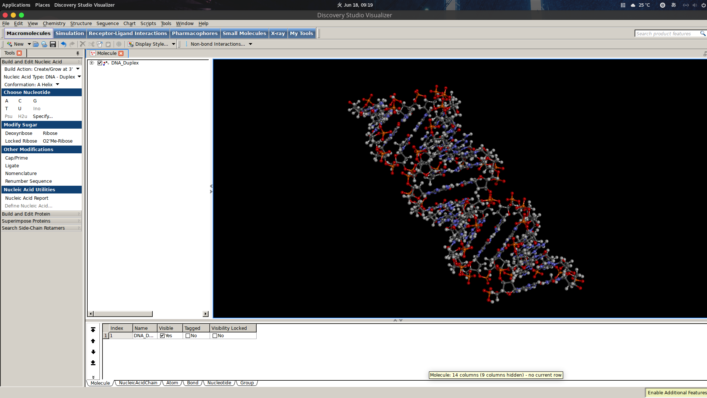

8. Discovery Studio¶
Discovery StudioはBIODIA社の分子可視化ツールで、特にDNAやアミノ酸などの生体分子を目で見て初期構造を作るときには重宝します。
有償版だとこれ１つでMD計算までできてしまうが、無料版でも初期構造の作成や構造緩和程度なら十分高機能に使える。
篠田グループの方はインストールすべし

8.1. インストール方法¶
ダウンロードページ(2019現在)にアクセスし、適当にプロフィールを入力します。
すべて入力し、submitするとダウンロードリンクが現れるのでLinux版をダウンロードします。
# ダウンロードディレクトリに移動
cd ~/Downloads
# インストールの実行（名前は異なるかもですが、[.bin]を実行すればいい。）
./biovia_2019.ds2019client.bin
# もし、何も始まらなかった場合、
chmod +x ./biovia_2019.ds2019client.bin
./biovia_2019.ds2019client.bin
# としてください。
# あとは指示に従ってインストールディレクトリなどの指定をする。
# 特に理由がなければ[1(デフォルト)]を選択しすすめる。
# インストールしたディレクトリに移動
# デフォルトは[~/BIOVIA/DiscoveryStudio2019/ と思われる。]
cd ~/BIOVIA/DiscoveryStudio2019/
# ライセンスパックのある場所へ移動
cd lp_installer
# ライセンスパックのインストール
./lp_setup_linux.sh
# 特に理由がなければ[1(デフォルト)]を選択しすすめる。
# ライセンスパックの[/etc/]がある場所へ移動
# デフォルトは[~/BIODIA/BIOVIA_LicensePack/etc と思われる。]
cd ~/BIODIA/BIOVIA_LicensePack/etc
# コンフィグファイルが[csh]記法なので、必要に応じてcshをダウンロード
sudo yum install -y csh
# コンフィグの実行
csh ./lp_config
csh ./lp_echovars
## 以下のような表示が出ていれば成功
## PATH=?????????
## export PATH=????
# DiscoveryStudioの[/bin/]の場所へ移動
cd ~/BIODIA/DiscoveryStudio2019/bin
# ライセンスパックがあるところを指定しつつコンフィグを実行
# ここまでデフォルトを指定していれば[~/BIODIA/BIOVIA_LicensePack]にあると思う
./config_lp_location ~/BIODIA/BIOVIA_LicensePack
# ただし、[~]のような文字が使えるかは試していないので、しっかり絶対パスで指定するほうが無難（tanakaの部分は適宜変更してください。）
./config_lp_location /home/tanaka/BIODIA/BIOVIA_LicensePack
# DiscoveryStadioの起動
./DiscoveryStudio2019
これで起動すればインストール成功です。
起動時に「ライブラリがありません」のようなエラーがでる場合は、
sudo yum install -y mesa-libGLU-devel
sudo yum install -y libXi-devel
とすることで、解決した。（個人差があるかも）
8.1.1. パスを通す¶
vi ~/.bashrc #.bashrcの編集
export PATH=??????? と書いてある行の末尾に
:$HOME/BIODIA/DiscoveryStudio2019/bin
を追加する。
source ~/.bashrc
./DiscoveryStudio2019
で起動できたらOK。